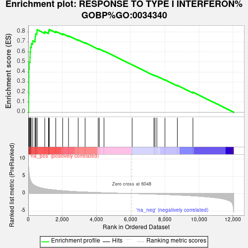
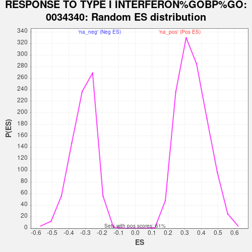

| Dataset | NHBE_SARSCoV2_ranks |
| Phenotype | NoPhenotypeAvailable |
| Upregulated in class | na_pos |
| GeneSet | RESPONSE TO TYPE I INTERFERON%GOBP%GO:0034340 |
| Enrichment Score (ES) | 0.8241898 |
| Normalized Enrichment Score (NES) | 2.377718 |
| Nominal p-value | 0.0 |
| FDR q-value | 0.0 |
| FWER p-Value | 0.0 |

| SYMBOL | RANK IN GENE LIST | RANK METRIC SCORE | RUNNING ES | CORE ENRICHMENT | |
|---|---|---|---|---|---|
| 1 | IFI27 | 25 | 7.449 | 0.0896 | Yes |
| 2 | MX1 | 27 | 7.363 | 0.1801 | Yes |
| 3 | OAS1 | 35 | 6.895 | 0.2644 | Yes |
| 4 | OAS2 | 36 | 6.847 | 0.3487 | Yes |
| 5 | OAS3 | 39 | 6.666 | 0.4305 | Yes |
| 6 | IFITM1 | 56 | 5.709 | 0.4995 | Yes |
| 7 | STAT1 | 103 | 4.281 | 0.5483 | Yes |
| 8 | IFITM3 | 108 | 4.218 | 0.5999 | Yes |
| 9 | IKBKE | 129 | 3.922 | 0.6465 | Yes |
| 10 | TRAF3 | 179 | 3.362 | 0.6838 | Yes |
| 11 | IFIT1 | 262 | 2.734 | 0.7106 | Yes |
| 12 | ISG15 | 395 | 2.289 | 0.7278 | Yes |
| 13 | STAT2 | 407 | 2.228 | 0.7543 | Yes |
| 14 | IFITM2 | 433 | 2.183 | 0.7791 | Yes |
| 15 | SHMT2 | 502 | 2.021 | 0.7983 | Yes |
| 16 | SP100 | 518 | 1.986 | 0.8215 | Yes |
| 17 | MYD88 | 965 | 1.393 | 0.8015 | Yes |
| 18 | IFNAR2 | 1185 | 1.217 | 0.7982 | Yes |
| 19 | TRIM65 | 1196 | 1.211 | 0.8123 | Yes |
| 20 | HDAC4 | 1230 | 1.192 | 0.8242 | Yes |
| 21 | JAK1 | 1612 | 0.992 | 0.8047 | No |
| 22 | IRAK1 | 2015 | 0.807 | 0.7811 | No |
| 23 | TYK2 | 2358 | 0.683 | 0.7610 | No |
| 24 | SIN3A | 2924 | 0.512 | 0.7203 | No |
| 25 | OASL | 3330 | 0.424 | 0.6917 | No |
| 26 | IFNAR1 | 4097 | 0.279 | 0.6314 | No |
| 27 | TBKBP1 | 4160 | 0.265 | 0.6295 | No |
| 28 | MAVS | 4437 | 0.222 | 0.6092 | No |
| 29 | TBK1 | 6083 | -0.004 | 0.4722 | No |
| 30 | TRIM56 | 7359 | -0.167 | 0.3680 | No |
| 31 | SETD2 | 7423 | -0.178 | 0.3650 | No |
| 32 | AZI2 | 7532 | -0.196 | 0.3584 | No |
| 33 | TANK | 8008 | -0.277 | 0.3222 | No |
| 34 | IFNE | 8732 | -0.425 | 0.2672 | No |
| 35 | SMPD1 | 9646 | -0.657 | 0.1993 | No |
